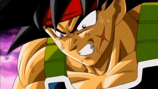

Dragon Ball é um mangá/anime criado por Akira Toriyama. O primeiro capítulo da história original foi publicado em 1984, na revista Weekly Shonen Jump. A história é centrada na jornada de Goku e Bulma, que buscam artefatos mágicos conhecidos como Esferas do Dragão: sete esferas com estrelas que, quando reunidas, permitem a realização de um desejo ao se invocar Shenlong, o Deus dragão. Esta série continua em publicação até hoje, por meio de Dragon Ball Super, e contou com outras duas continuações: Dragon Ball Z e Dragon Ball GT (não é canônico).
